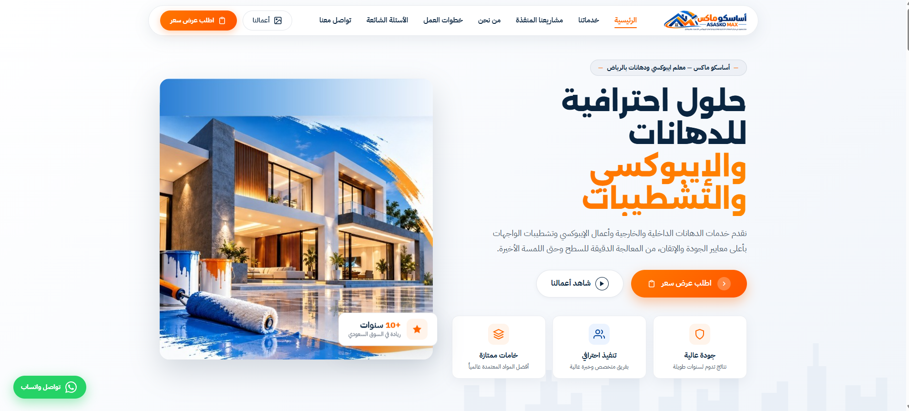
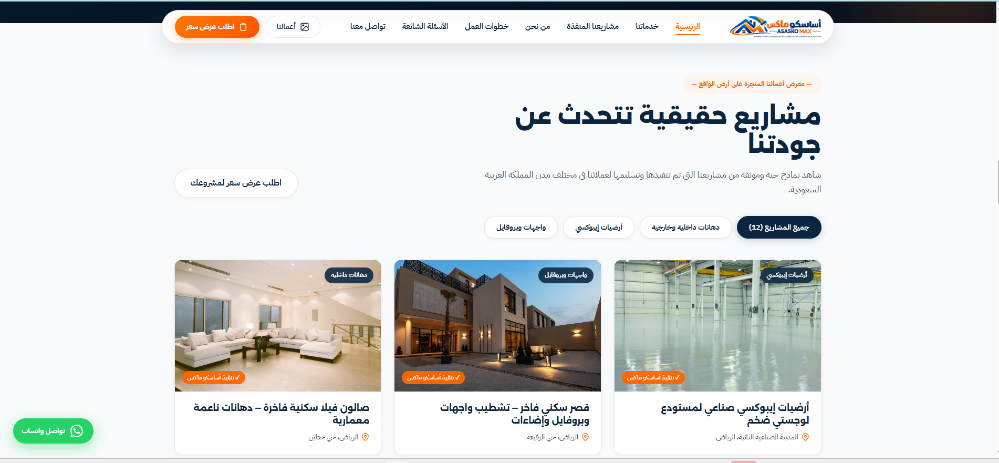
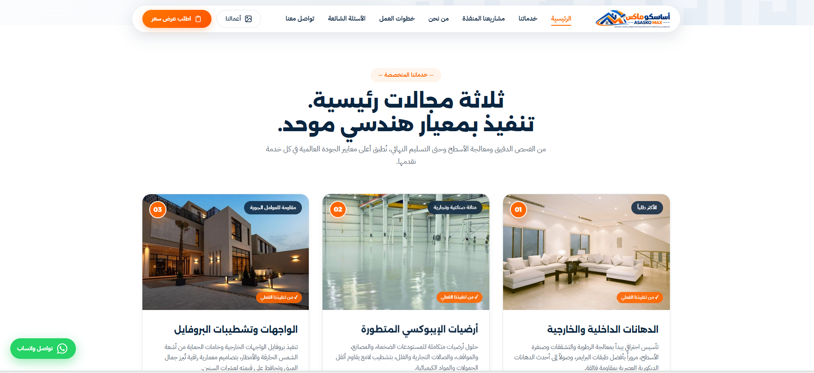

ASASKO MAX
أساسكو ماكس للمقاولات والتشطيبات والإيبوكسي

التحدي
تتسم سوق مقاولات التشطيب والدهانات والإيبوكسي بالمنافسة الكبيرة وغياب المعايير الرقمية الواضحة لدى غالبية المقاولين التقليديين. كان التحدي يكمن في نقل الصورة الاحترافية للشركة وبناء جسر ثقة فوري مع ملاك الفلل والقصور وأصحاب المستودعات والمصانع، عبر منصة رقمية سريعة وعصرية توضح بدقة مواصفات الخامات المعتمدة وسنوات الضمان، وتوفر مساراً سهلاً وواضحاً لطلب المعاينات الميدانية المجانية وطلب عروض الأسعار دون تعقيد.
الفكرة والمنهج
تبني هوية بصرية مفعمة بالحيوية والوضوح تجمع بين التباين العالي (البرتقالي الإنشائي النشط مع الكحلي الداكن العميق والخلفيات البيضاء النقية). تم تقسيم الموقع إلى محاور وظيفية واضحة تستجيب مباشرة لمتطلبات العملاء: مجالات التخصص الثلاثة (الدهانات، الإيبوكسي، تشطيب الواجهات)، استعراض سابقة الأعمال مع إمكانية التصفية، والتوضيح الشفاف لخريطة العمل المكونة من خمس مراحل متتالية.
بناء التجربة ومعرض المشاريع
تم التركيز على تجربة الإقناع البصري السريع من خلال دمج معرض أعمال حي وموثق (Interactive Portfolio Showcase) يقسم المشاريع حسب النوع (مستودعات صناعية، قصور سكنية، واجهات وبروفايل)، مما يسمح للعميل بمشاهدة نماذج حقيقية مطابقة لمشروعه قبل اتخاذ القرار. كما تم تصميم رحلة طلب عرض السعر لتكون مباشرة ومقترنة بزر اتصال سريع ورابط مباشر للواتساب، بالإضافة إلى قسم الأسئلة الشائعة الذي يجيب بشفافية تامة عن أسعار المتر وتفاصيل الضمان.

الاتجاه البصري ودليل الخدمات
تصميم بطاقات خدمات متناسقة تعتمد على صور حية من واقع العمل الميداني، مع شارات تميز توضح متانة المواد (مثل شهادات المنشأ لجوتن والجزيرة وسيكا) وشهادات الضمان الخطي. كما تم اعتماد نظام بطاقات داكنة لقسم الخبرة والضمان لإحداث تباين بصري درامي يجذب انتباه الزائر للإحصائيات الحيوية (+250 مشروع منجز، 10+ سنوات خبرة).

العقبات والحلول
أثناء التصميم وتطوير المنصة، واجهتنا عقبات رئيسية وتم التغلب عليها كالتالي:
تخوف العملاء من الغموض في أسعار المتر وجودة المواد
يعاني العملاء في قطاع المقاولات من التفاوت العشوائي في الأسعار والخوف من استخدام مواد تجارية رديئة تقلل من عمر التشطيب.
إبراز الشفافية التسعيرية ومواصفات الخامات المعتمدة
تخصيص قسم مخصص للإجابة الشفافة عن تساؤلات تكلفة المتر ومحدداتها، مع توثيق أسماء الشركاء وموردي المواد العالميين كجوتن وسيكا لضمان ثقة العميل المطلقة.
تشتت العميل في معرفة مراحل العمل والتسليم والضمانات
عدم وضوح الخطوات التنفيذية التي يمر بها المشروع من أول اتصال وحتى تسليم الموقع الفعلي.
صياغة منهجية عمل خماسية واضحة ومدعومة بالضمان
تحويل العمل المعقد إلى مسار تدريجي من 5 خطوات مرقمة (من المعاينة وحتى تسليم شهادة الضمان الرسمية المعتمدة)، مما يزيل أي تردد لدى متخذ القرار.
النتيجة
إطلاق موقع تسويقي وتعريفي متكامل ومتوافق تماماً مع كافة أحجام الشاشات، يعكس مكانة أساسكو ماكس كرائد موثوق في مجال الإيبوكسي والتشطيبات بالرياض، مساهماً في رفع معدل التحويل لطلبات عروض الأسعار والاتصال المباشر.